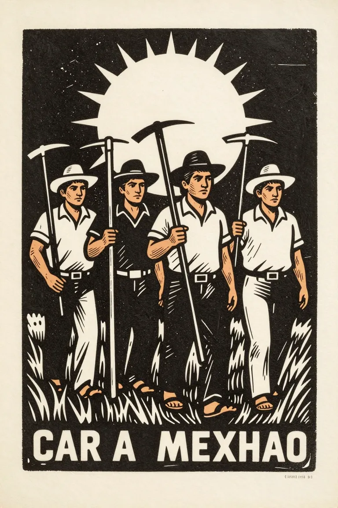

print · 1937–c.1970 · also: TGP linocut, Mexican people's print, Taller de Gráfica Popular print
A black-and-white print cut in linoleum or wood. The Taller de Gráfica Popular made leaflets, posters and portfolios for workers, unions and the state, in large black masses and white gouge lines.

Core thesis
A print that a collective cuts quickly in cheap material can serve a political cause and reach a wide public.
Design principles
Cut the block with a gouge, so that the white line stays bold and clear.
Fill the picture with solid black and let the white line draw the form.
Show workers, peasants and soldiers in a strong action, drawn from a low or a close view.
Add hand-lettered text: a slogan, a name or a verse.
Print in black; add a red block only where the message needs it.
Print on cheap paper in editions of tens to thousands.
Make work with the group: one artist cuts, others print and share the plate.